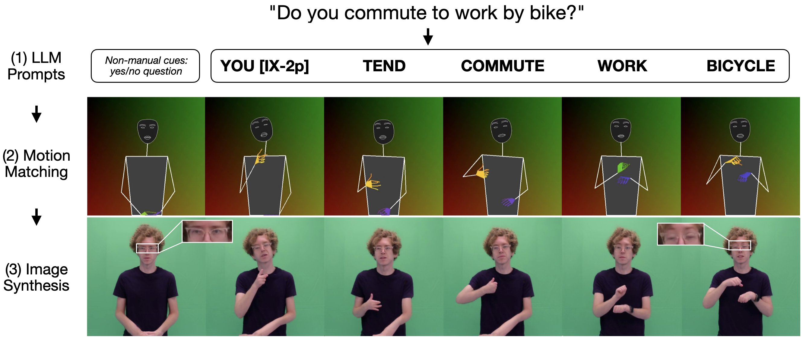

Rotem Shalev-Arkushin
I am a Computer Science Ph.D. student at Tel-Aviv University, under the supervision of Prof. Amit H. Bermano and Prof. Ohad Fried.
My main research topic is visual content synthesis, with a focus on low-resource challenges. In particular, I am interested in Sign Language Production, image and video editing and generation.
Publications
- Towards AI-driven Sign Language Generation with Non-manual Markers CHI, 2025, honorable mention (top 5%). Paper


Teaching
| Spring 2025 | Python Programming for Engineers, Tel-Aviv University - Teaching |
| Fall 2024/25 | Python Programming for Engineers, Tel-Aviv University - Teaching Assistant |
| Spring 2023 | Introduction to Machine learning, Reichman University - Teaching Assistant |
| Spring 2022 | Introduction to Deep learning, Reichman University - Teaching Assistant |
| Fall 2021/22 | Introduction to Computer Science, Reichman University - Teaching Assistant |
Contact Me